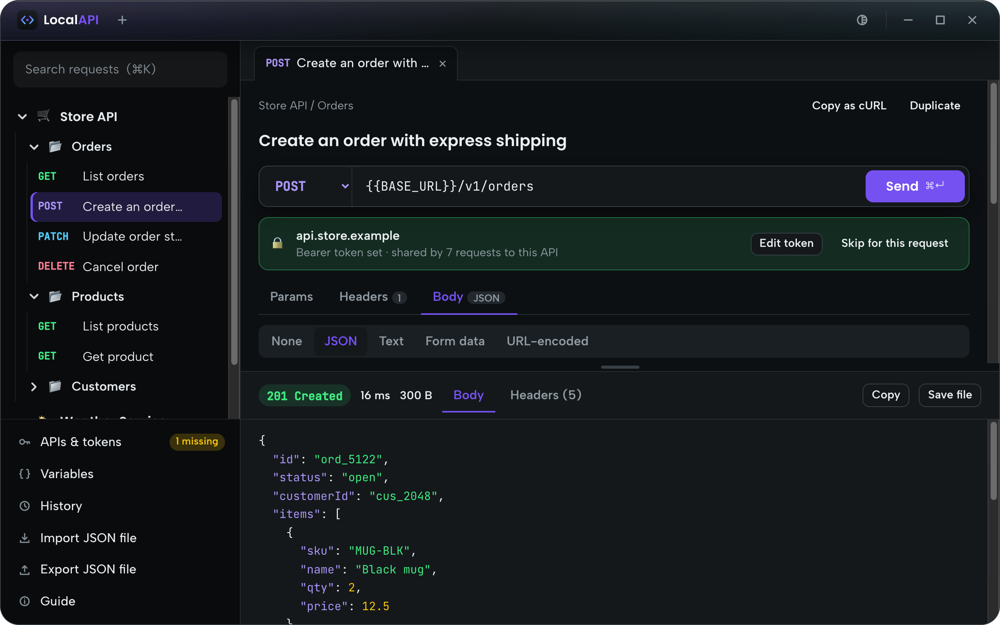
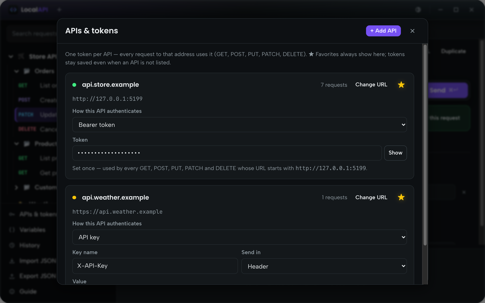
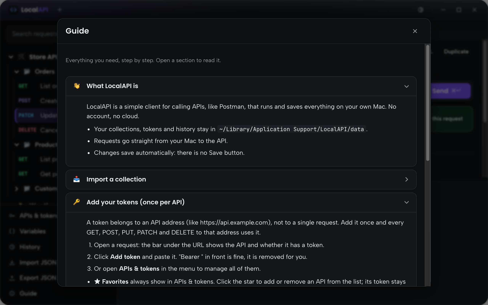

One token per API
Add a token once for an API address and every GET, POST, PUT, PATCH and DELETE to it uses it. Star your favorite APIs.
LocalAPI is a fast, friendly API client that lives on your Mac. Import your Postman collections, add each token once, and send requests. No cloud, no sign-up: everything stays on your computer.

The parts of Postman you actually use, in a calmer app that opens instantly.
Add a token once for an API address and every GET, POST, PUT, PATCH and DELETE to it uses it. Star your favorite APIs.
Import Postman collections (v2.1) and environments as they are: folders, requests, headers and bodies.
Export a collection as a JSON file for your team. Tokens are never included; everyone adds their own.
Formatted JSON, PDF and image previews, response headers, and one click to save the file.
Write {{name}} in a URL, header or body. Collection and global variables, with clear warnings when one is missing.
Collections, tokens and history are saved on your Mac only. No account, no analytics, no servers of ours.
Scales smoothly from half a screen to full screen, with a menu that shrinks to icons when space is tight.
Give each collection its own emoji, switch between dark and light, and find any request with ⌘K.
Manage every API's token in one place, and find step-by-step help right inside the app.


Open the .dmg and drag LocalAPI into Applications.
Drop in the JSON file your team shared, or a Postman export.
Paste each API's token once, pick a request and press ⌘ Enter.
LocalAPI runs entirely on your Mac. Download it and send your first request in a minute.
Download for macOS